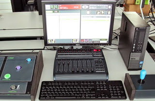

Perkembangan Teknologi
Manusia merupakan makhluk yang sempurna dan pada dasarnya telah dianughrahi akal dan nafsu. Manusia ditunjuk untuk menjadi kholifah di bumi dan diberi kebebasan untuk memanfaatkan dan menggunakan fasilitas yang ada di bumi dan tentu saja harus sesuai kadar dan tidak boleh berlebihan.
Di era globalisasi ini, manusia telah banyak menciptakan perubahan-perubahan besar, mereka berhasil membuat alat-alat teknologi yang dapat bermanfaat dan memudahkan berkomunikasi maupun mencari informasi, dengan demikian di zaman modern ini teknologi bisa dianggap sebagai salah satu bagian anggota tubuh dari manusia itu sendiri yang apabila ditiadakan maka akan terasa kurang sempurna.
Apalagi alat komunikasi seperti: Handphone, Tablet, dll, alat ini menjadi kebutuhan pokok bagi pemiliknya, selain memudahkan komunikasi jarak jauh juga bisa digunakan mencari berita atau informasi apapun yang kita inginkan. Untuk itu kita dituntut untuk belajar dan memanfaaatkan teknologi itu sendiri supaya kita tidak tertinggal dan tidak GAPTEK.
Perkembangan teknologi memang membawa perubahan besar di belahan dunia ataupun disetiap bangsa, di bidang pemerintah baik negara maju ataupun negara berkembang keduanya sama-sama membutuhkan teknologi sebagai proses penyediaan dan transfer informasi dari pemerintah kepada pihak lain, misalnya: antara warga masyarakat atau penduduk dengan menggunakan E-Goverment. Sedangkan di bidang kesehatan para ilmuawan banyak menciptakan alat-alat teknologi canggih yang bermanfaat untuk membantu proses penyembuhan pasien. Dan masih banyak lagi penemuan-penemuan tekonlogi yang ada di dunia ini.
Namun, kita juga harus berprilaku bijak dalam menghadapi arus perkembangan teknologi yang sangat pesat ini, karena apabila kita bijak maka akan membawa hal-hal positif bagi kita, namun apabila kita tidak bisa memanfaatkan dengan baik maka kitalah nantinya yang akan diperbudak dan diperdaya oleh teknologi itu sendiri yang pastinya berdampak negatif.
Selain itu ternyata dengan teknologi yang semakin canggih, masyarakat telah berhasil memanfaatkannya untuk berbagai macam keperluan,misalnya bisnis online. Sehingga mereka yang mampu membaca peluang yang ada bisa dengan mudah dan leluasa mendapatkan penghasilan hanya dengan alat teknologi tersebut, tapi ada juga manusia-manusia yang tidak bertanggung jawab memanfaatkannya dengan membuat bisnis online yang justru merugikan banyak orang dengan cara menipu. Untuk itu diperlukan kehati-hatian dalam menyikapi berkembangnya teknologi ini.
Sekarang ini, manusia menjadikan teknologi menjadi gaya hidup mereka, bahkan beberapa orang beranggapan “TIDAK DAPAT HIDUP TANPA GADGET” sehingga mengakibatkan dimanapun berada gadget harus selalu menemaninya, bahkan masyarakat yang berstatus sosial tinggi tidak mau dianggap ketinggalan jaman sehingga apabila ada model-model gadget yang baru dan lagi nge-HITS mereka langsung bersaing dan memburu untuk membeli lagi dan meninggalkan yang lama, dengan begitulah cara ini membuat mereka merasa menjadi “MANUSIA MODERN”.
Untuk itu antara manusia dan teknologi disaat ini rasanya sulit untuk dipisahkan, karena manusia selamanya akan membutuhkan teknologi untuk memudahkan aktifitas hidupnya, sedangkan teknologi akan terus berkembang sesuai dengan eranya, karena mungkin suatu saat nanti masih banyak teknologi-teknologi yang sekarang belum ditemukan, nanti bisa ditemukan dimasa yang akan datang oleh manusia-manusia yang kreatif, inovatif, serta berkemauan keras untuk bereksperimen.
Disinilah para pemuda-pemudi yang menjadi penerus bangsa dituntut untuk terus mengembangkan bakatnya untuk bisa menciptakan teknologi yang bermanfaat bagi kehidupan, jangan sampai mereka terlena oleh keadaan yang membawahnya kepada kehancuran nantinya, karena hidup dizaman modern ini dibutuhkan kelincahan dan akal yang cerdas agar kita nantinya bisa bersaing dengan masyarakat luas dan bisa membawa perubahan untuk bangsa kita.[DS]